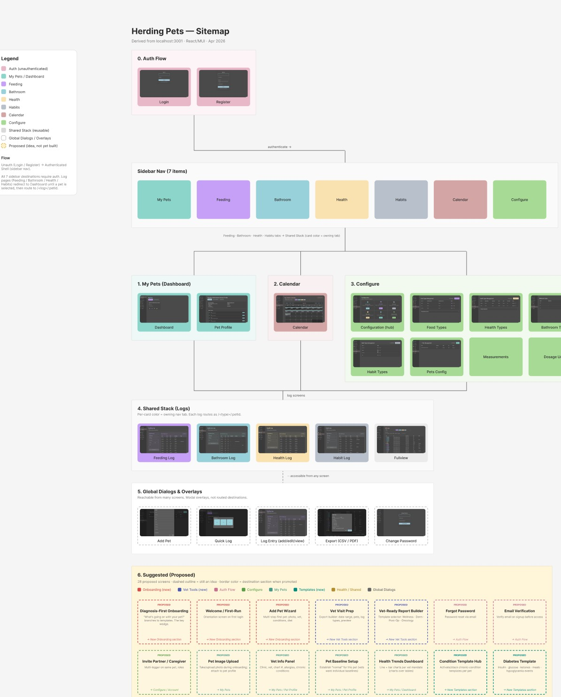
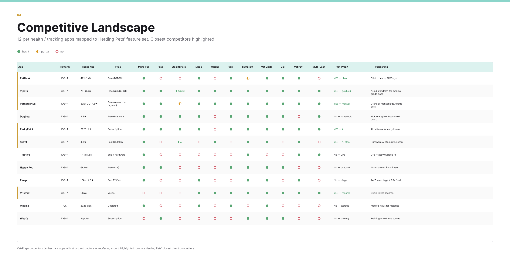
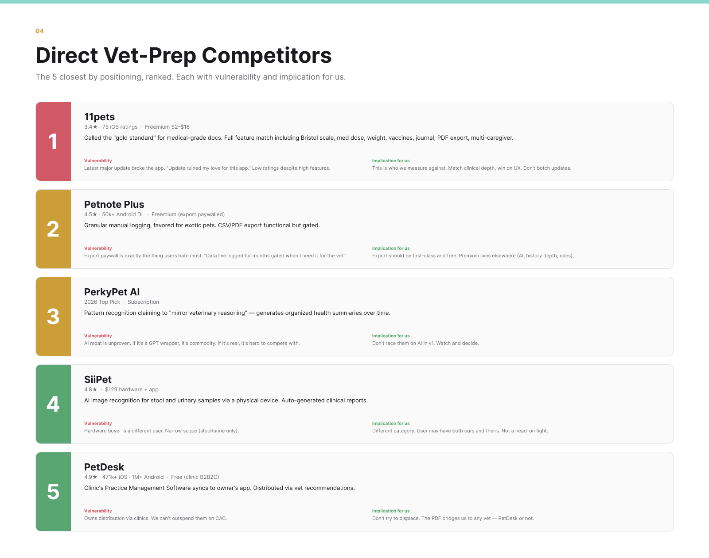
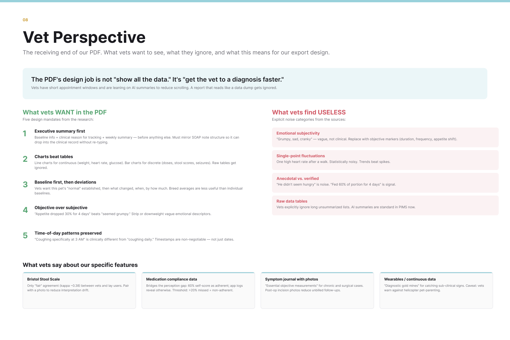
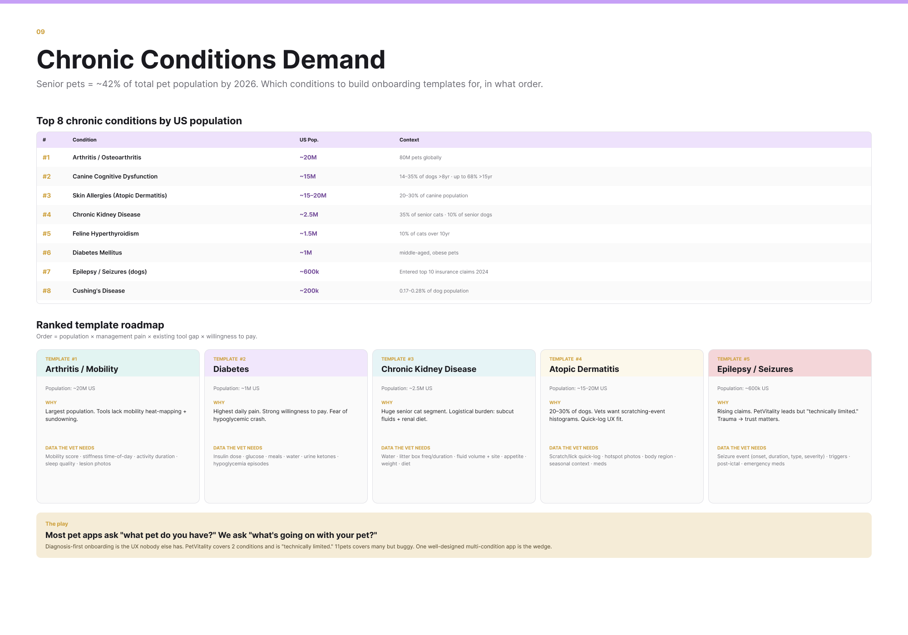
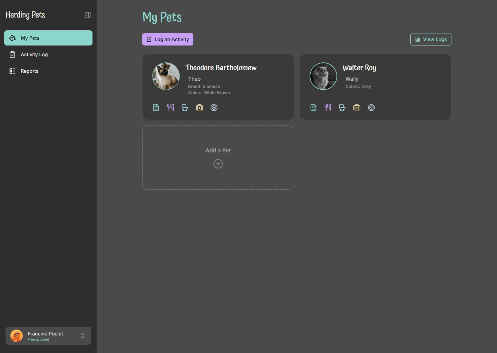
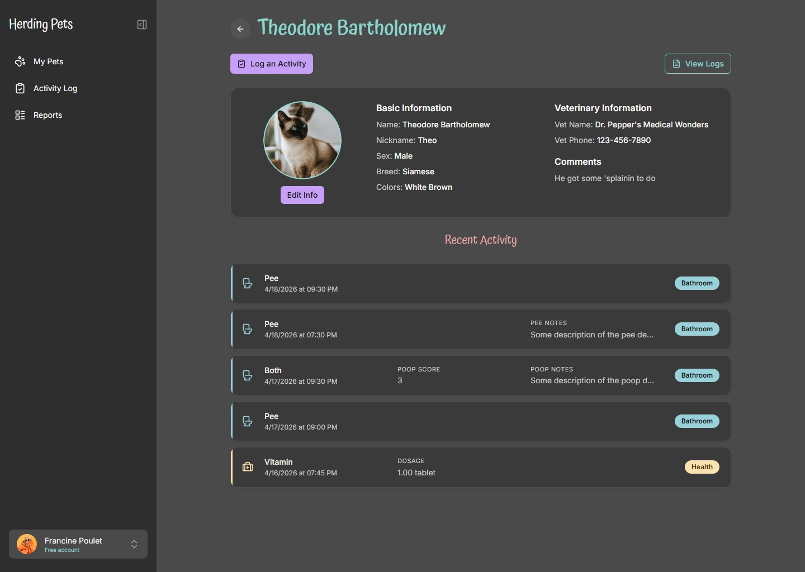
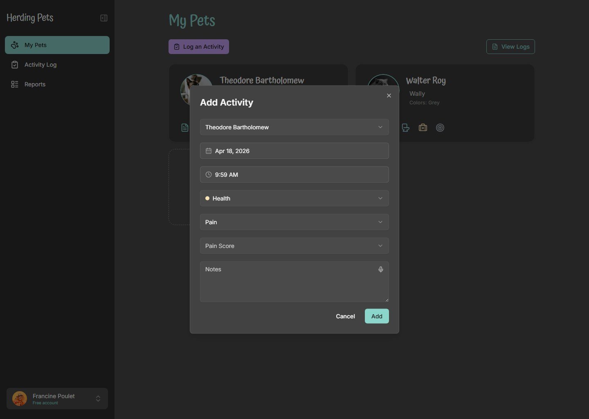

Herding Pets, Product Design Discovery
I joined an early-stage pet health app as the designer. Before redesigning a single screen, I mapped the entire product, ran deep competitive and veterinary research to find where it could win, then built a working prototype to show the direction. The point: I start by understanding the product and the market, not by pushing pixels.
My role: Designer, partnered with a separate product owner and developer. I owned the discovery: a full system map of the existing app, a competitive and clinical research read, and a functional redesign prototype. The research framed the opportunity for the team; the prototype showed what acting on it could look like.
The system map
You cannot redesign what you cannot see. I reverse-engineered the existing app from its codebase into a single sitemap: every real screen captured with a live screenshot and organized by destination, plus 28 research-backed screens proposed for where the product could go next. It gave the team one picture to point at and a shared vocabulary for what exists today versus what is still a bet.

The competitive read
Next I mapped the field: twelve pet health apps scored against Herding Pets' feature set, then the five closest competitors ranked by positioning, each with its vulnerability. The pattern was clear. 11pets is the category's "gold standard" for medical-grade records, but it sits at 3.4 stars and just shipped an update that broke the app. The opening is to match its clinical depth and win on the thing it keeps fumbling: polish and reliable releases.


What the vet actually needs
The product's real payoff is the artifact you hand your vet: a structured PDF of your pet's history. So I researched the other side of that handoff, what clinicians actually want to receive. The findings became design mandates: lead with an executive summary, favor charts over tables, keep objective measurements over mood notes, and never paywall the export, the single most hated move in the category. The same research surfaced the wedge. Chronic-condition management is named whitespace, and a "diagnosis-first" onboarding that asks "what is going on with your pet" instead of "what pet do you have" is a UX no competitor offers.


The prototype
With the map, the market, and the wedge in hand, I built a functional prototype in React to make the direction tangible instead of leaving it on slides. It carries the brand into a calmer dark interface: a multi-pet dashboard, a pet profile that puts vet information and recent activity side by side, and a category-aware logging flow where the form adapts to what you are recording. It is clickable and real, the fastest way to get a team aligned on a direction they can feel.



This is how I open a product engagement: map what exists, study the field, find the wedge, then prototype it. By the time I am drawing finished screens, every decision already has a reason behind it.